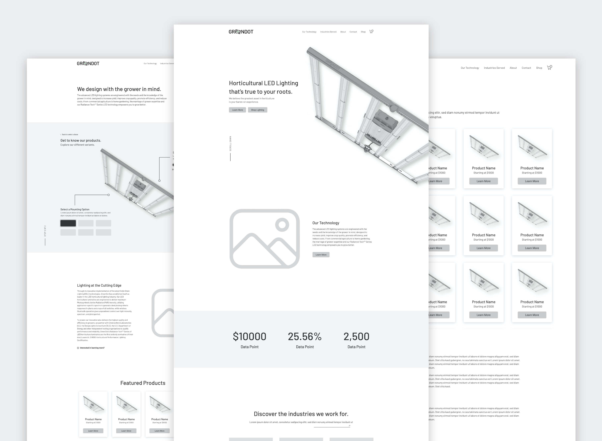
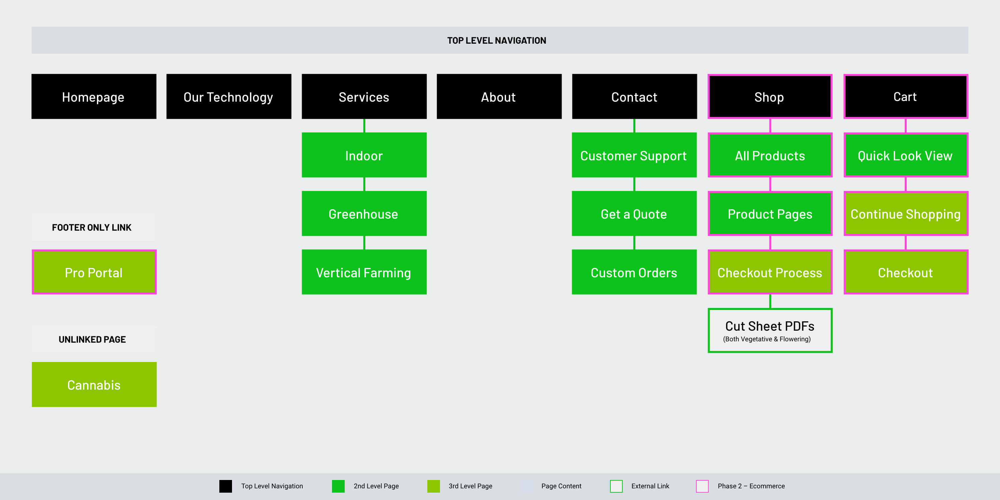
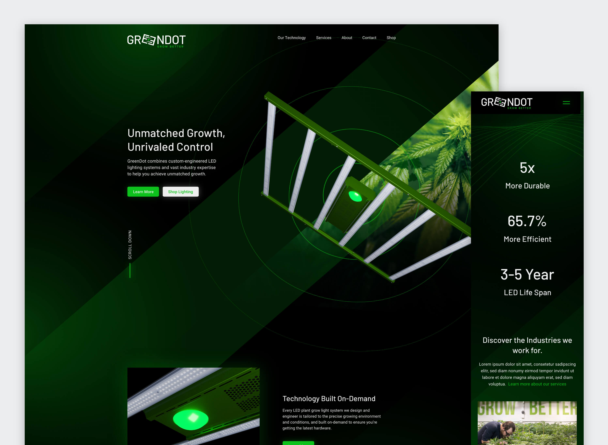
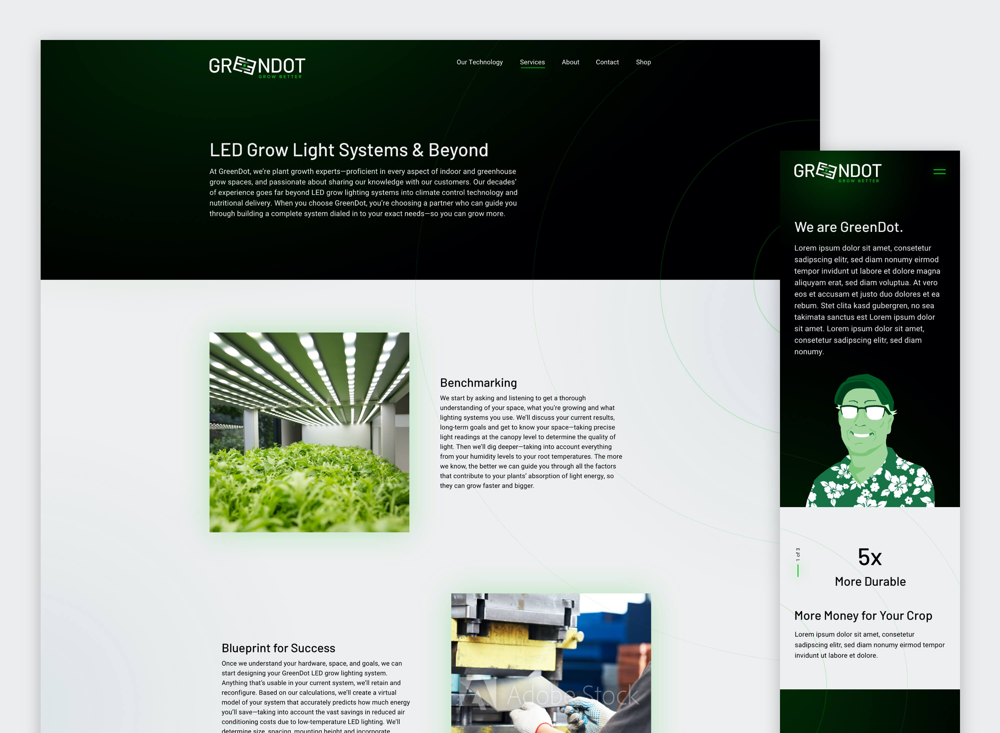

ADDITIONAL CREDITS
Created at Gupta Media
Sarah Ingerick, brand identity
PROJECT INVOLEMENT
- information architecture
- UX & UI design
- ecommerce design
RELATED LINKS
greendot websitegreendot
WEB DESIGN
GreenDot is a small business from Rhode Island who specializes in horticulture LED lighting systems. In a rapidly growing industry, their team was looking to be known as the industry experts that are passionate about sharing their knowledge with customers.
After giving their brand a much needed update, we moved onto a full website redesign. In a two step approach, our goal was to help GreenDot establish their web presence before moving into a second phase where we would incorporate e-commerce.
  Sharing Their Knowledge
GreenDot's previous site included little information about their product and company. Our first task was to discover their stoy. Who are they in the industry? What demographic are we trying to target? How do we help them stand out amongst larger, corporate competitors?
Our focus audiences fell on both ends of the spectrum: the ordinary home-grower looking for a minimal number of lighting systems, and the full-blown operational grower looking to fill a warehouse full of lights. One needs a bit of help finding their best solution, and the other knows what they need and expect for it to come from the experts. For GreenDot's new site, we needed to create a happy medium between accessibile information for amateurs while demonstrating their level of expertise in the industry.
This meant breaking down the technology and services provided by GreenDot. To better explain their lighting systems, we incorporated an interactive guide where users could learn more about each aspect of their fixtures.
More Than Just a Product
Moving away from technical details, we needed to let GreenDot's personality shine through on their Services and About pages. "Services" was an addition to the site's content during this redesign. The old site lacked empathy for the customer, and didn't allow for them to understand what they would really be putting their money towards. Customers now see what working with GreenDot looks like from start to finish, a proccess that is thoughtful and intuitive.
The "About" page further told the story of GreenDot and their personality. This page allows customers to learn about the faces behind the technology. We wanted people to understand that GreenDot is not like their competitors. They are passionate about their industry and approachable to a wide range of customers.
